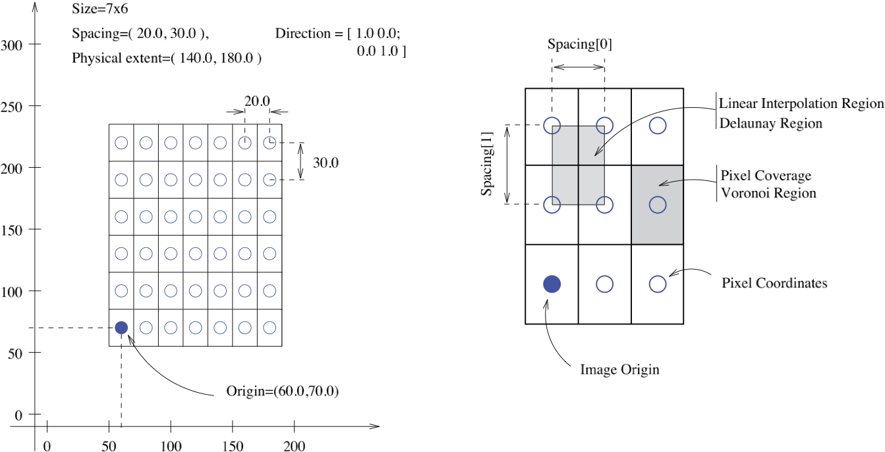

Image Basics¶
Image class is basic container for image data in SimpleITK. It can hold 2 or 3 dimensional images and pixel can be either be a scalar or a vector. A RGB image for example, is a 2 dimensional image with 3 component vector pixel.
Contents
Construction¶
There are a variety of ways to create an image. All images’ initial value is well defined as zero
Image(width, height, pixelID)
Image(width, height, depth, pixelID)
Image(sizeVector, pixelID)
Image(sizeVector, pixelID, numberOfComponents)
For example, in python you can create a RGB image of size 128x64 as
import SimpleITK as sitk
image_RGB = sitk.Image([128,64], sitk.sitkVectorUInt8, 3)
Pixel Types¶
The pixel type is represented as an enumerated type PixelIDValueEnum .
The following is a table of the enumerated list.
| EnumValue | Description |
|---|---|
sitkUInt8 |
Unsigned 8 bit integer |
sitkInt8 |
Signed 8 bit integer |
sitkUInt16 |
Unsigned 16 bit integer |
sitkInt16 |
Signed 16 bit integer |
sitkUInt32 |
Unsigned 32 bit integer |
sitkInt32 |
Signed 32 bit integer |
sitkUInt64 |
Unsigned 64 bit integer |
sitkInt64 |
Signed 64 bit integer |
sitkFloat32 |
32 bit float |
sitkFloat64 |
64 bit float |
sitkComplexFloat32 |
complex number of 32 bit float |
sitkComplexFloat64 |
complex number of 64 bit float |
sitkVectorUInt8 |
Multi-component of unsigned 8 bit integer |
sitkVectorInt8 |
Multi-component of signed 8 bit integer |
sitkVectorUInt16 |
Multi-component of unsigned 16 bit integer |
sitkVectorInt16 |
Multi-component of signed 16 bit integer |
sitkVectorUInt32 |
Multi-component of unsigned 32 bit integer |
sitkVectorInt32 |
Multi-component of signed 32 bit integer |
sitkVectorUInt64 |
Multi-component of unsigned 64 bit integer |
sitkVectorInt64 |
Multi-component of signed 64 bit integer |
sitkVectorFloat32 |
Multi-component of 32 bit float |
sitkVectorFloat64 |
Multi-component of 64 bit float |
sitkLabelUInt8 |
RLE label of unsigned 8 bit integers |
sitkLabelUInt16 |
RLE label of unsigned 16 bit integers |
sitkLabelUInt32 |
RLE label of unsigned 32 bit integers |
sitkLabelUInt64 |
RLE label of unsigned 64 bit integers |
There is also sitkUnknown, which is used for undefined or erroneous pixel ID’s. It has a value of -1.
The 64-bit integer types are not available on all distributions. When not available the value is sitkUnknown.
You can get the type of pixel using
Image::GetPixelID()
and its string representation using
Image::GetPixelIDTypeAsString()
Images and Physical Space¶
The unique feature of SimpleITK (derived from ITK) as a toolkit for image manipulation and analysis is that it views images as physical objects occupying a bounded region in physical space. In addition images can have different spacing between pixels along each axis, and the axes are not necessarily orthogonal. The following figure illustrates these concepts.
Each Image has following properties:
- Pixel type
Type of pixel/voxel. Refer to table above. In case of a vector image, number of components per pixel can be greater than 1. This is fixed on creation.
Can get pixel type through
Image::GetPixelID(). Number of components per pixel can be found byImage::GetNumberOfComponentsPerPixel()- Size
Number of pixels/voxels in each dimension. This quantity implicitly defines the image dimension. This is also fixed on creation.
Size of the image can be found by
Image::GetSize()and dimension byImage::GetDimension()- Origin
Coordinates of the pixel/voxel with index (0,0,0) in physical units (i.e. mm). Default is zero i.e. origin of physical space.
Image::GetOrigin()andImage::SetOrigin()can be used to get and set origin respectively.- Spacing
Distance between adjacent pixels/voxels in each dimension given in physical units. Default is one i.e. (1 mm, 1 mm, 1 mm).
Image::GetSpacing()andImage::SetSpacing()can be used to get and set spacing respectively.- Direction Matrix
Mapping/rotation between direction of the pixel/voxel axes and physical directions. Default is identity matrix. The matrix is passed as a 1D array in row-major form.
Image::GetDirection()andImage::SetDirection()can be used to get and set direction matrix respectively.
Note
All the transformations like rotation or affine transform are done on the underlying physical space. You can think of image of a view of this physical space.
Let’s illustrate this in python:
from downloaddata import fetch_data as fdata
image = sitk.ReadImage(
fdata("nac-hncma-atlas2013-Slicer4Version/Data/A1_grayT1.nrrd"))
print("Pixel Type {}".format(image.GetPixelID()))
print("Size {}".format(image.GetSize()))
print("Origin {}".format(image.GetOrigin()))
print("Spacing {}".format(image.GetSpacing()))
print("Direction {}".format(image.GetDirection()))
Out:
Fetching nac-hncma-atlas2013-Slicer4Version/Data/A1_grayT1.nrrd
Pixel Type 8
Size (288, 320, 208)
Origin (-77.625, -107.625, 119.625)
Spacing (0.75, 0.75, 0.75)
Direction (0.0, 0.0, 1.0, 1.0, 0.0, 0.0, 0.0, -1.0, 0.0)
Transform voxels to physical space¶
Following equation can be used to convert voxel coordinates/indices to physical coordinates:
where x is coordinate of the voxel in physical space, v is voxel index, o is origin, D is direction matrix and S is diag (spacing).
These functions can be directly used to transform between voxel and physical space:
Image::TransformContinuousIndexToPhysicalPoint()Image::TransformIndexToPhysicalPoint()Image::TransformPhysicalPointToContinuousIndex()Image::TransformPhysicalPointToIndex()
Let’s try these out in python
pt = (4.0, 2.0, 0.0)
idx = (30, 87, 45)
print("Point {} is voxel {}.".format(
pt, image.TransformPhysicalPointToIndex(pt)))
print("Voxel {} is point {}.".format(
idx, image.TransformIndexToPhysicalPoint(idx)))
Out:
Point (4.0, 2.0, 0.0) is voxel (146, 160, 109).
Voxel (30, 87, 45) is point (-43.875, -85.125, 54.375).
Accessing Pixels¶
You can get the pixel values using one of
Image::GetPixelAsInt8(),
Image::GetPixelAsUInt32(),
Image::GetPixelAsFloat()
Image::GetPixelAsDouble() etc.
Similarly, you can set the pixel values using
Image::SetPixelAsInt8(),
Image::SetPixelAsUInt32(),
Image::SetPixelAsFloat()
Image::SetPixelAsDouble() etc.
In dynamic type languages like python and lua, GetPixel and SetPixel are available.
In python, you can also use pythonic indexing to get and set pixel values.
For example
x, y, z = 10, 15, 20
# These two mean the same
print("Get pixels: {:.3f}, {:.3f}".format(image.GetPixel(x, y, z),
image[x, y, z]))
# These two mean the same
image.SetPixel(x, y, z, 1.2)
image[x, y, z] = 1.2
Out:
Get pixels: 8.638, 8.638
Arrays/Tensors¶
If you have numpy library installed in python, you can convert images to arrays and vice versa using GetArrayFromImage() and GetImageFromArray().
Similarly, if you have torch installed, you can use GetTensorFromImage() and GetImageFromTensor().
Numpy and torch are numerical computational libraries for python and lua respectively.
Note
While converting from tensor/array to Image, remember to set the image’s origin, spacing, and possibly direction cosine matrix. The default values may not match the physical dimensions of your image.
Note
Image access is in x,y,z order (image.GetPixel(x,y,z) or image[x,y,z]) with zero based indexing. Note that this is different from numpy or torch indexing which uses z, y, x order.
In numpy for example:
sitkimg = sitk.Image(10, 20, 30, sitk.sitkFloat32)
sitkimg[1, 2, 3] = 1.5
npimg = sitk.GetArrayFromImage(sitkimg)
print("Size from SimpleITK: {}, numpy: {}".format(
sitkimg.GetSize(), npimg.shape))
print("npimg[1, 2, 3] = {}, npimg[3, 2, 1] = {}".format(
npimg[1, 2, 3], npimg[3, 2, 1]))
Out:
Size from SimpleITK: (10, 20, 30), numpy: (30, 20, 10)
npimg[1, 2, 3] = 0.0, npimg[3, 2, 1] = 1.5
In torch, indexing starts with 1:
sitk = require 'SimpleITK'
sitkimg = sitk.Image(10, 20, 30, sitk.sitkFloat32)
sitkimg:SetPixel({1, 2, 3}, 1.5)
thimg = sitk.GetTensorFromImage(sitkimg)
sitksize = sitkimg:GetSize()
thsize = thimg:size()
print(sitksize[0], sitksize[1], sitksize[2]) -- prints 10 20 30
print(thsize[1], thsize[2], thsize[3]) -- prints 30 20 10
print(thimg[{2, 3, 4}], thimg[{3, 2, 1}],
thimg[{4, 3, 2}]) -- prints 0 0 1.5
Slicing¶
Slice() can be used to slice the image and a dimension can be collapsed with Extract().
In python, you can use pythonic slicing without having to use these:
import matplotlib.pyplot as plt
logo = sitk.ReadImage(fdata('SimpleITK.jpg'))
# Brute force subsampling
logo_subsampled = logo[::2, ::2]
# Get the sub-image containing the word Simple
simple = logo[0:115,:]
# Get the sub-image containing the word Simple and flip it
simple_flipped = logo[115:0:-1,:]
# display results
fig, ((ax1, ax2), (ax3, ax4)) = plt.subplots(nrows=2, ncols=2,
sharex=True,
sharey=True)
ax1.imshow(sitk.GetArrayFromImage(logo))
ax1.axis('off')
ax1.set_title("logo")
ax2.imshow(sitk.GetArrayFromImage(logo_subsampled))
ax2.axis('off')
ax2.set_title("logo_subsampled")
ax3.imshow(sitk.GetArrayFromImage(simple))
ax3.axis('off')
ax3.set_title("simple")
ax4.imshow(sitk.GetArrayFromImage(simple_flipped))
ax4.axis('off')
ax4.set_title("simple_flipped")
fig.tight_layout()
plt.show()
Out:
Fetching SimpleITK.jpg
Image Operations¶
SimpleITK supports basic arithmetic operations between images, taking into account their physical space
img1 = sitk.Image(24, 24, sitk.sitkUInt8)
img2 = sitk.Image(img1.GetSize(), sitk.sitkUInt8)
img1[0, 0] = 10
img2[0, 0] = 30
img3 = img1 + img2
img4 = img1 + 72
print("Test add: {} {}".format(img3[0, 0], img4[0, 0]))
img2.SetOrigin([3, 5])
# Following raises error as the images are not in the
# same physical space
try:
img5 = img1 + img2
except Exception as e:
print(e)
Out:
Test add: 40 82
Exception thrown in SimpleITK Add: /nfs/Users/blowekamp/anaconda/conda-bld/work/build/ITK/Modules/Core/Common/include/itkImageToImageFilter.hxx:248:
itk::ERROR: AddImageFilter(0x106091e90): Inputs do not occupy the same physical space!
InputImage Origin: [0.0000000e+00, 0.0000000e+00], InputImage_1 Origin: [3.0000000e+00, 5.0000000e+00]
Tolerance: 1.0000000e-06
Following are some of the pixel-wise operations that can be used with image, image pairs or image, scalar pairs:
- Addition
+ - Subtraction
- - Multiplication
* - Division
/ - Modulo
% - Power
**
Lot more operations like sine, cosine, exponentation etc. are also available.
Total running time of the script: ( 0 minutes 2.132 seconds)